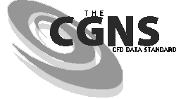
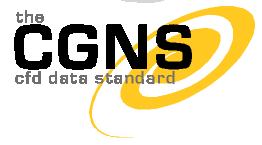
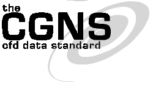
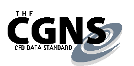

(CGNS Documentation Home Page)
(Steering Committee Charter)
(Overview and Entry-Level Document)
(A User's Guide to CGNS)
(Standard Interface Data Structures)
(SIDS-to-ADF File Mapping Manual)
(SIDS-to-HDF File Mapping Manual)
(Mid-Level Library)
(ADF User's Guide)
(CGNS Tools and Utilities)
(CGNS Documentation Home Page)
(Steering Committee Charter)
(Overview and Entry-Level Document)
(A User's Guide to CGNS)
(Standard Interface Data Structures)
(SIDS-to-ADF File Mapping Manual)
(SIDS-to-HDF File Mapping Manual)
(Mid-Level Library)
(ADF User's Guide)
(CGNS Tools and Utilities)
CGNS Steering Committee
Meeting Minutes
9 January 2001
8:00pm
Reno, Nevada
The meeting was called to order at 8:00pm.
There were 21 attendees, listed below.
The minutes of the 7 December 2000 telecon were approved as posted on
the web.
- Steering Committee Membership - A motion to revise the
charter to increase the number of voting members of the Steering
Committee from 15 to 16 was made, seconded and approved. A motion
to add three organizations to the Steering Committee was made and
seconded. Each of the proposed new members briefly introduced
themselves and their organizations. Aerospatiale Matra Airbus -
Alexandre Corjon; AEDC - Greg Power; Pointwise - John Chawner. The
motion passed by concensus.
- Logo - John Chawner presented revised logo recommendations
designed by the DPC Group. The DPC Group has offered their design
services for the logo in exchange for recognition on our web
site. There was some discussion of the designs, and John agreed to
take minor suggestions back to the design group and have the logo
revised. The proposed designs are included
below. Concensus seemed to form around number 1, dropping 'the'
and increasing the size of the 'CFD Data Standard' tag line to be
the full width of the CGNS text.
- Survey Results - Steve Legensky reviewed the results of the
CGNS user survey (HTML,
PDF).
- ISO Status - Ray Cosner outlined the process to generate an
ISO standard (HTML,
PDF) for aerodynamic data
based on CGNS.
- There was much discussion about the need to identify and fund a
Developer Focal Point. ICEM-CFD Engineering has been donating
their time for this function, and their contribution has been
essential to the success of CGNS, and much appreciated. There was
discussion of how we might fund a continuation of this effort, and
how we might find someone to fill that role. Bob Bush will follow
up on some of these leads. Ray Cosner offered to support him in
coordinating the effort.
- Release Status - CGNS 2.0 is in final Beta testing and
should be released in the next month or so. Diane Poirier requested
other organizations to test the beta version. Chris Rumsey and
Steve Legensky agreed to test the new capabilities before release,
and Bob Bush will see if Ed Hall (Rolls Royce) will test them also.
The meeting was adjourned at 10:00pm.
Attendees
|
| Bob Bush |
| Pratt & Whitney
|
|
| Ray Cosner |
| Boeing
|
|
| Chris Rumsey |
| NASA LaRC
|
|
| Steve Karman |
| Lockheed Martin
|
|
| Bill Jones |
| NASA LaRC
|
|
| Greg Power |
| AEDC
|
|
| Alex Corjon |
| EADS Airbus SA
|
|
| Jiim French |
| AIAA
|
|
| Dan Dominik |
| Boeing
|
|
| Kevin Mack |
| Adapco
|
|
| Don Roberts |
| Amtec
|
|
| Jeanne Mara |
| Intelligent Light
|
|
| David Edwards |
| Intelligent Light
|
|
| Charles Hirsch |
| Numeca
|
|
| Diane Poirier |
| ICEM CFD Engineering
|
|
| Michael Aftomis |
| NASA
|
|
| John Chawner |
| Pointwise
|
|
| Theresa Babrauckas |
| NASA Glenn
|
|
| Steve Legensky |
| Intelligent Light
|
|
| Anthony Iannetti |
| NASA Glenn
|
|
| Peter Eiseman |
| Program Development Co.
|
|
| Armin Wulf |
| ICEM CFD Engineering
|
CGNS Logo Samples
The table below contains the latest four concepts for the CGNS logo
based on feedback provided during the 07 December steering committee
telecon. Each logo concept is presented in color and greyscale. The
CGNS logo was developed, produced, and contributed to the CGNS Steering
Committee by The DPC Group.
| color version
| black & white version
|

1
| 
2
|

3
| 
4
|

5
|
6
|

7
| 
8
|
For more information contact John Chawner at (888) GRIDGEN or
jrc@pointwise.com.